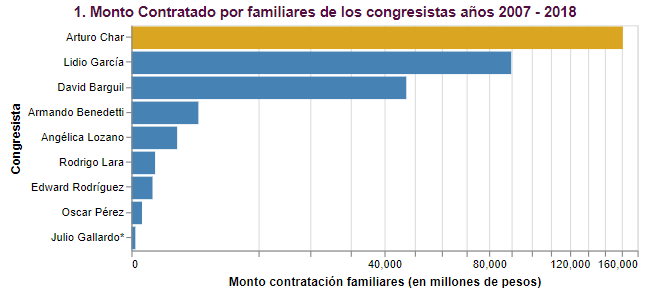
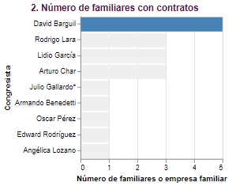
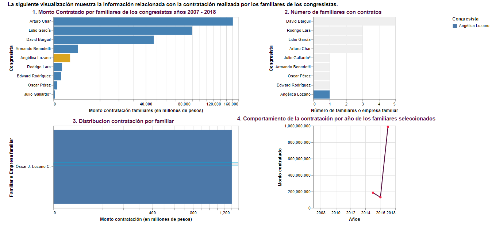
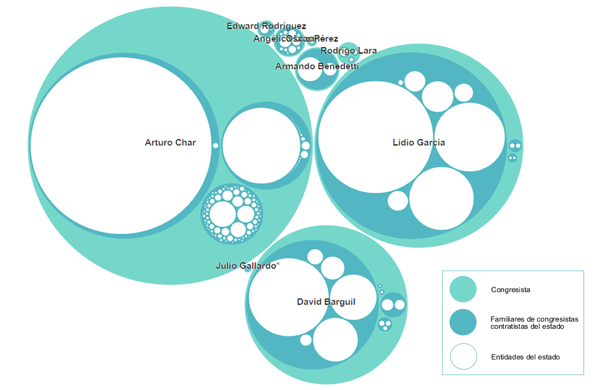

## **sabemos lo que hiciste** **(*Familiares de congresistas contratistas del estado*)** <img src="lib/CP Libs/CP Identidad/CUESTION PUBLICA/PNG/CP_B3.png" width="20%"> <!--  --> *Santiago Suárez Conde* <br> *Martha Cardenas*
<img src="lib/CP Libs/CP Identidad/CUESTION PUBLICA/PNG/CP_B3.png" width="30%"> - <p class="fragment"> Es un medio digital dedicado a la investigación y el periodismo de datos de interés público. </p>
<h2> Sabemos lo que hiciste </h2> - <p class="fragment"> Serie que investiga a congresistas colombianos, revelando su patrimonio y sus posibles conflictos de intereses.</p> - <p class="fragment"> Actualmente, Cuestión Pública está llevando a cabo una investigación que quiere mostrar a los colombianos que 1 de cada 2 congresistas en el país tiene contratistas familiares con el estado</p>
<h1>Data</h1> - <p class="fragment"> Lista 10 congresistas más votados. </p> - <p class="fragment"> Lista de familiares, financiadores, laborales, equipo UTL, político, familiar y político, amistades, cercanías y empresas relacionadas.</p> - <p class="fragment"> Cruce de datos en el portal de Servicio de Contratación Pública (SECOP - www.contratos.gov.co/) con un Scraping que creo <b>Datasketch</b>.</p>
<h1>Usuarios</h1> - <p class="fragment"> El Usuario objetivo es cualquier ciudadano que ingresa al sitio Web de Cuestión Pública con el fin de encontrar información relacionada con política y el interés público.</p>
<h1>Solución</h1> - <p class="fragment"><b>Demo: </b> https://santiagoconde0.github.io/sabemosLoQueHiciste/</p>
<h2>Tecnologías usadas</h2> - HTML 5 - CSS - Javascript - D3 v5 - jQuery - Bootstrap - RevealJS - RevealVizScroll
<h2>Tareas</h2> - <p class="fragment"> Resumir la distribución del monto de la contratación por congresista realizada por sus familiares desde el año 2007 al 2018</p> - <p class="fragment"> Explorar de forma divertida a los congresistas que tienen familiares contratando con el estado con sus respectivas características (Monto contratos, familiar, nombre de empresa, cantidad de contratos, tipos de contratos, etc.)</p>
Insights
- <p style="font-size: 40px"> El Congresita que presenta mayor monto contratos por sus familiares o empresa familiar es Arturo Char por un valor que asciende a $150.000 millones de pesos en 416 contratos.</p> 
- <p> El congresista que presenta mayor número de familiares con contratación con el estado es David Barguil con 5 familiares por un monto de contratación que asciende a $43.000 millones de pesos en 32 contratos.</p> 
- <p style="font-size: 30px" > La empresa familiar Sociedad Futura Aeropuertos de Oriente S.A.S del Congresita Arturo Char (periodos congreso 2010 – 2018) presenta el mayor monto contratado que asciende a mas de $120.000 millones de pesos en tres contratos, cuya contratación inicio en el año 2010 con el mayor monto recibido en el mismo año.</p>
- <p style="font-size: 30px" > El hermano de la congresista Angelica Lozano (periodos congreso 2014 – 2018) presenta una contratación que inicio en el año 2015 por 185 millones de pesos y asciende a 987 millones de pesos al año 2017 para un total de 1.304 millones de pesos en 13 contratos.</p> 
- <p style="font-size: 30px" > El Congresita Arturo Char presenta la mayor concentración de entidades con las cuales la empresa familiar celebró contratos. Seguido por el Congresita Lido García y David Barguil.</p> 
- <p style="font-size: 30px"> El tipo de contrato donde se concentra el mayor monto de contratación realizada por los familiares de los congresista es la Licitación Pública, seguido del Convenio.</p>
Gracias!